Users Guide
Version 1.00 Release
February 7, 2007
- Introduction
to Open|SpeedShop
- Brief Open|SpeedShop Overview
- Common Terminology
- Open|SpeedShop
General Usage
- Concept of an Experiment
- Selecting an Experiment
- Gathering, Saving, and Re-examining Performance Data With Open|SpeedShop
- Open|SpeedShop Specific Environment Variables
- Extensibility
- Open|SpeedShop Build and Installation Information
- Open|SpeedShop Test Information
- Open|SpeedShop
Tools Information
- Open|SpeedShop Invocation Command "openss"
- Open|SpeedShop Quick Start Information
- Running Open|SpeedShop on a cluster or multiple partitions
- Using
the GUI Tool
- GUI Launch Background Information:
- Basic Menus and Menu
Item Introduction
- File Menu
- Experiments Menu
- Wizard Menu
- Tools Menu
- Typical
Open|SpeedShop GUI Wizard Usage
- Introductory Wizard Display
- PC Sampling Wizard - Initial Display
- PC Sampling Wizard - Change Sampling Rate Display
- PC Sampling Wizard - Load Executable or Attach To Running Process Display
- PC Sampling Wizard - Enter Executable Dialog Display
- PC Sampling Wizard - Attach To Running Process Dialog Display
- PC Sampling Wizard - Experiment Summary Display
- PC Sampling Experiment Display
- Ready to Run the Experiment
- PC Sampling Experiment - Running Experiment Display
- PC Sampling Experiment - Paused experiment use Continue button to continue
- PC Sampling Experiment - Statistics Display
- PC Sampling Experiment - Split Panel Display
- PC Sampling Experiment - Source and Statistics Relationship Display
- Typical Open|SpeedShop GUI non-Wizard Usage
- Comparing Performance Data using the Open|SpeedShop GUI
- Finding Processes, Threads, or Ranks that have out of range values using the Open|SpeedShop GUI
- Open|SpeedShop GUI Usage on MPI Applications
- Using the Interactive CLI Tool
- Using the Batch Command Tool
- Scripting API
- Plugin API (Extensibility) Description
- Appendix A: Command Syntax Description
- Credits and Trademark References
Introduction
to Open|SpeedShop
Brief
Open|SpeedShop Overview
Open|SpeedShop was designed to be modular and extensible. It supports the concept of plugins which allow users, if they so desire, to create their own performance experiments. The project is designed in such a way as to enable value-added plugins to be added to the open source version.
Another key feature of the performance tool is its usability. The user interface is designed so that a degree in computer science is not required to use it. To make the tool usable for a greater range of users, the performance tool will provide novice user Wizards, easily understood language in the user interface components, and interactive help.
Open|SpeedShop's baseline functionality was released, under the GPL and LGPL Open Source licenses. Support for single system image (SSI) machines, support for clusters (i.e., multiple OS kernels), exclusive and inclusive user time, program counter (PC) sampling, MPI call tracing, Input/Output tracing, Floating point exception tracing and CPU hardware performance counter experiments are the key components of the baseline functionality. The performance tool was designed in such a manner that will allow users to easily extend the tool by adding their own experiments.
The performance tool will use dynamic probe class library (DPCL) as a building block component for cluster system support. The use of DPCL will provide a portable means for the performance tool to supply cluster support for platforms supported by the Dyninst dynamic instruction package. DPCL uses the Dyninst application programming interface (API) to provide its instrumentation capability.
Availability of the new performance tool based on SpeedShop technology on Linux platforms will enable Fortran (77, 90, and 95), C, and C++ programmers to use an advanced performance analysis tool within the Open Source environment.
Open|SpeedShop is oriented towards gathering and displaying performance data gathered from an application and relating that performance data back to the application's source file, function, and/or line number(s).
Common Terminology
Technical terms can have multiple and/or context sensitive meanings, therefore this section attempts to explain and clarify the meanings of the terms used in this document.
- Experiment: A set of collectors and executables bound together to generate performance metrics.
- Focused Experiment: The current experiment commands operate on. The user may run or view multiple experiments simultaneously and unless a particular experiment is specified directly, the focused experiment will used. Experiments are given an enumeration (expId) for identification.
- Component(s): A somewhat self-contained section of the Open|SpeedShop performance tool. This section of code does a set of specific related tasks for the tool. For example, the GUI component does all the tasks related to displaying Open|SpeedShop wizards, experiment creation, and results using a graphical user interface. The CLI component does similar functions but uses the interactive command line delivery method.
- Collector: The portion of the tool containing logic that is responsible for the gathering of the performance metric. A collector is a portion of the code that is included in the experiment plugin.
- Metric: The entity, which the collector/experiment is gathering. A time, occurrence counter, or other entity, which reflects in some way on the applications performance and is gathered by a performance experiment (by the collector).
- Param: Each collector allows the user to set certain values that control the way a collector behaves. The parameter or param may cause the collector to perform various operations at certain time intervals or it may cause a collector to measure certain types of data. Although Open|SpeedShop provides a standard way to set a parameter, it is up to the individual collector to decide what to do with that information. Detailed documentation about the available parameters is part of the collector's documentation.
- Framework: The set of API functions that allows the user interface to manage the creation and viewing of performance experiments. It is the interface between the user interface and the cluster support and dynamic instrumentation components.
- Plugin: A portion of the performance tool that can be loaded and included in the tool at tool start-up time. Development of the plugin uses a tool specific interface (API) so that the plugin, and the tool it is to be included in, know how to interact with each other. Plugins are normally placed in a specific directory so that the tool knows where to find the plugins.
- Target: This is the application or part of the application one is running the experiment on. In order to fine tune what is being targeted, Open|SpeedShop gives target options that describes file names, host names, thread identifiers, rank identifiers and process identifiers.
Open|SpeedShop General Usage
Concept of an Experiment
Selecting an Experiment
The Summary of Experiments table below shows the possible
experiments you can perform using the Open|SpeedShop tools and
the
reasons why you might want to choose a specific
experiment. The Clues column shows when you might use an experiment.
The Data Collected column indicates performance data collected by the
experiment. For detailed information on the experiments, see the
relevant section in the remainder of this chapter.
Open|SpeedShop provides wizards in the Graphical User Interface that
"walk" users through the process of selecting the performance data to
be gathered. The wizards ask a set of "plain" language
questions to focus on the desired performance monitoring experiment
and, therefore also, the desired performance monitoring information to
be gathered and analyzed.
Table: Summary of Experiments
|
Experiment |
Clues |
Data Collected |
|---|---|---|
|
fpe |
High system time. Presence of floating point operations. |
All floating-point exceptions, with the exception type and the
call stack at the time of the exception. |
|
hwc |
High user CPU time. |
Counts at the source line, machine instruction, and function levels of various hardware events, including: clock cycles, graduated instructions, primary instruction cache misses, secondary instruction cache misses, primary data cache misses, secondary data cache misses, translation lookaside buffer (TLB) misses, and graduated floating-point instructions. PC sampling is used. See "Hardware Counter Experiments (hwc)" |
|
hwctime |
High user CPU time. |
Similar to hwc experiment, except that callstack sampling is used. See “Hardware Counter Experiments (hwctime)”. |
|
io |
I/O-bound. |
Times the following I/O system calls: read, readv,
write, writev, open, close,
dup, pipe, creat. The
time reported is wall clock time. |
| iot | I/O-bound. | Traces and times the following
I/O system calls: read, readv, write, writev,
open, close, dup, pipe, creat.
The
time reported is wall clock time. |
|
mpi |
MPI performance is poor. |
Times calls to various MPI routines.
The time reported is wall clock time. |
| mpit | MPI performance is poor |
Traces and times calls to
various MPI routines.
Output is a line of trace per MPI call. All calls are accounted
for - no sampling. The time reported is wall clock time. See “MPI Call Tracing Experiment (mpi)” |
|
pcsamp |
High user CPU time. |
Actual CPU time at the source line, machine instruction, and function levels by sampling the program counter at 10 or 1-millisecond intervals. See “PC Sampling Experiment (pcsamp)”. |
|
usertime |
Slow program, nothing else known. Not CPU-bound. |
Inclusive and exclusive CPU time for each function by sampling the callstack at 30-millisecond intervals. See “User Time Experiment (usertime)”. |
Gathering, Saving, and Re-examining Performance Data With Open|SpeedShop
Open|SpeedShop tools allow for the gathering of performance data through the specification of experiments, as mentioned in the sections above. This performance data can be saved into an experiment file. Once the experiment data is saved into a named experiment file, Open|SpeedShop can be exited, without losing any performance data. Open|SpeedShop can be invoked at a later time or date to analyze or print the saved experiment performance data. To do this the user would use the open saved experiment menu item under the "File" menu.Open|SpeedShop
Specific Environment Variables
Open|SpeedShop takes advantage of a number of environment
variables to control or change functionality or for debugging
purposes. The following sections describe the specific variables
and their uses.Environment variables
that relate to Open|SpeedShop functionality or access.
OPENSS_ALLOW_PYTHON_COMMANDS
By default Open|SpeedShop does not allow Python code to be intermixed with the Open|SpeedShop commands (despite the fact that the Python interpreter is always used). Setting this to "true" allows Python code and Open|SpeedShop commands to be freely intermixed. This has the side affect that things like spacing before commands will have meaning (because Python assigns meaning to indentation).OPENSS_DISABLE_MPISTARTUP
The current startup mechanism in O|SS searches the executable and checks whether it is an MPI application or not. If it is an MPI application, it looks for the proctable and then tries to attach to all of them. This mechanism, however, prevents the user from simply looking at a single rank of an MPI job or by just running a sequentialapplication linked with MPI. In these cases the complete startup mechanism is invoked.
This environment variable, if set, prevents O|SS to look after the proctable and treats any job like a sequential one. Until there is an alternative mechanism for selecting individual ranks, this environment variable is a means to gather performance data for individual ranks.
OPENSS_MPI_IMPLEMENTATION
Specifies the MPI implementation being used by the MPI application
whose performance is being analyzed. Should be set to one of the
currently supported MPI implementations:openmpi, lampi, mpich2, mpich, mpt
Eventually Open|SpeedShop will be able to auto-detect the MPI implemetnation of the application and this variable will only be used to override the auto-detection code.
OPENSS_PLUGIN_PATH
Specifies additional colon-delimited paths that should be searched for Open|SpeedShop plugins. Use primarily for specifying the location of any site-specific, or user-developed, plugins. Open|SpeedShop should be able to locate its default plugin set without having to set this variable.Environment variables
controlling the generation debugging information (DEVELOPER CENTRIC)
OPENSS_DEBUG_DATABASE
Enable gathering of performance statistics for all executed SQL statements. When enabled, Open|SpeedShop will generate a report to the standard error stream that lists every executed SQL statement, the number of times it executed, and the amount of time spent executing it.This variable must be set before Open|SpeedShop is started. The exact value of this variable is irrelevant. Open|SpeedShop only looks to see if it was set or not.
OPENSS_DEBUG_DATAQUEUES
Enable gathering of performance statistics for the performance data queues. When enabled, Open|SpeedShop generates a single line to the standard error stream every time it writes performance data to an experiment database. This line contains the running total number of enqueued data blobs and the number of bytes in those blobs, the running total number of written data blobs and the number of bytes in those blobs, and the instantaneous data write rate (expressed as bytes/second).This variable must be set before Open|SpeedShop is started. The exact value of this variable is irrelevant. Open|SpeedShop only looks to see if it was set or not.
OPENSS_DEBUG_DPCLD
Enable DPCL daemon debugging output. Currently this does NOT work with the manually started DPCL daemons. Only with the daemons started via xinetd. The exact output produce is up to the DPCL implementation.This variable must be set before Open|SpeedShop is started. The exact value of this variable is irrelevant. Open|SpeedShop only looks to see if it was set or not.
OPENSS_DEBUG_MPIJOB
Enable debugging of MPI job create/attach. When enabled, Open|SpeedShop generates debugging statements to the standard error stream during the various phases of picking up the host/PID list for an MPI job. Useful for determining if Open|SpeedShop thinks a given process is part of an MPI job and what processes it believes are part of that job.This variable must be set before Open|SpeedShop is started. The exact value of this variable is irrelevant. Open|SpeedShop only looks to see if it was set or not.
OPENSS_DEBUG_OPENSS
By default Open|SpeedShop uses a trick where-by it does an exec() of itself in order to modify its LD_LIBRARY_PATH such that libraries, plugins, etc. are automagically found based on the executable's location. This exec() tends to cause problems with debugging tools such as gdb and valgrind. Enablingthis causes Open|SpeedShop to skip the exec() and thus allow it to be debugged by the mentioned tools. Doing so, however, may require an explict setting of LD_LIBRARY_PATH.
This variable must be set before Open|SpeedShop is started. The exact value of this variable is irrelevant. Open|SpeedShop only looks to see if it was set or not.
OPENSS_DEBUG_PERF_PROCESS
Enable gathering of performance statistics for process create/attach. When enabled, Open|SpeedShop will generate a report to the standard error stream that lists the various phases of process creation/attachment and the minimum, average, and maximum times taken to reach that particular phase. Useful for finding performance bottlenecks.This variable must be set before Open|SpeedShop is started. The exact value of this variable is irrelevant. Open|SpeedShop only looks to see if it was set or not.
OPENSS_DEBUG_PROCESS
Enable debugging of the Process class within Open|SpeedShop. When enabled, Open|SpeedShop generates detailed debugging statments to the standard error stream for all process operations (e.g. attachment, suspend, resume, symbol table access, instrumentation,e tc.) being performed. The status of EVERY DPCL operation that is performed is also reported. Since the Open|SpeedShop implementation is multithreaded and asynchronous, this information is critical when debugging race conditions, deadlocks, etc. As well as when diagnosing DPCL failures.This variable must be set before Open|SpeedShop is started. The exact value of this
variable is irrelevant. Open|SpeedShop only looks to see if it was set or not.
OPENSS_LIMIT_SIGNAL_CATCHING
By default Open|SpeedShop catches fatal signals such as SIGSEGV and attempts to gracefully cleanup any open databases. This cleanup can interfere with debugging efforts. Setting this to "true" disables Open|SpeedShop' fatal signal handlers and simply terminates the application with a core file as would normally happen.
Extensibility
The Open|SpeedShop performance tool is designed to be extensible for both users and developers of Open|SpeedShop itself.The principle concept is the plugin. Plugins are in the form of shared libraries and data files. Open|SpeedShop plugins control experiment definition, data collection and data display, whether ASCII output or as a GUI panel. All the stock experiments are in plugin form.
Plugins can be written for advanced/enhanced versions of experiment collectors, and views for all the User Interfaces. These plugins allow the Open|SpeedShop performance tool to be enhanced by the open source community for either a general or specific need.
See the Plugin API (Extensibility) Description section for a detailed description.
Open|SpeedShop Build and Installation Information
The Open|SpeedShop Build and Installation Guide describes how to build and install Open|SpeedShop.
Open|SpeedShop Test Information
Location and Organization of Tests
The Open|SpeedShop test suite can be found under the test subdirectory in the Open|SpeedShop source repository. Under the test subdirectory there are three directories:- "test_scripts" contains the testing scripts that are used to run the tests, compare results, and output test reports.
- "src" contains the tests with compare files and other essential files to run the tests.
- "executables" contains subdirectories for the executables used in the regression and DPCL tests.
How to Run the Open|SpeedShop Tests
To execute the Open|SpeedShop set of regression tests. You must first build the tests by changing directories from OpenSpeedShop/to OpenSpeedShop/test. Do a "make" in that directory. That will compile all the test executables and make them available for regression testing.
Now change you directory path to "OpenSpeedShop/test/src/regression" and invoke the runall script. The runall script will execute all the tests in the subdirectories below the "regression" directory and create a test report. Currently the Open|SpeedShop tests are only available in the source distribution.
Open|SpeedShop Tools Information
The tools that are the basis for Open|SpeedShop are the performance tool graphical user interface (GUI), the interactive command line (CLI), the batch command, and the Python Scripting API. These are the four Open|SpeedShop tools that have user interfaces.
Open|SpeedShop Invocation Command "openss"
The Open|SpeedShop program will be invoked by the user typing the "openss" command. When the user invokes Open|SpeedShop command there are three options for it's mode of operation:
This invocation of Open|SpeedShop causes the GUI to be raised then a command panel is also created. This command panel window becomes the interactive CLI window. Under this invocation Open|SpeedShop interactive commands can be entered into the Graphical User Interface's command panel and have the same effect as if they were entered under the "openss -cli" option.This invocation of Open|SpeedShop causes the window terminal becomes the interactive CLI window.This invocation of Open|SpeedShop causes Open|SpeedShop to execute a performance experiment. specified by additional arguments, directly without user interaction. The -batch operation can be used in scripts and batch processing environments.
Open|SpeedShop Quick Start Information
Open|SpeedShop can be invoked in a number of ways. The Open|SpeedShop Quick Start Guide gives a few short examples that will hopefully help the first time users to get started and serve as an introduction to the following sections about Open|SpeedShop tool usage.
Running Open|SpeedShop on a cluster or multiple partitions
To run Open|SpeedShop on a multiple node machine configuration, each node must have DPCL and Dyninst installed, as Open|SpeedShop's support for multiple nodes is through DPCL daemons. If Open|SpeedShop is properly installed, this will be transparent to an Open|SpeedShop user. See the attaching to MPI jobs section for information on attaching to processes running on other hosts or partitions.
MPI implementations that support the MPIR_proctable interface allow Open|SpeedShop to automatically attach to all of the user's MPI ranked processes. Currently, Open|SpeedShop automatically attaches to all ranked processes for MPI applications using MPT, MPICH, MPICH via SLURM, OpenMPI, or LAMPI MPI implementations.
Using the GUI Tool
The Open|SpeedShop GUI contains a main window from which users can choose a wizard to help choose the proper experiment based on input to the wizard selecting questions. The GUI also contains a source view panel, a statistics panel, and command panel.
GUI Launch Background Information:
The GUI is bundled into a dynamic library that is loaded on demand. It's the Command Line Interface (CLI) that launches the GUI. By default the CLI will launch the GUI upon invocation of the Open|SpeedShop tool. However, the CLI can be started without starting the GUI ($ openss -cli) and then the GUI can loaded and initialized when needed via the CLI "openGui" command.
Upon invoking Open|SpeedShop ($ openss) the command line is parsed, and if the GUI is requested, the GUI library is loaded and launched. Open|SpeedShop then drops into an event loops, one for parsing command line events and the other for parsing GUI events.
When the GUI is loaded, the GUI looks for GUI plugins in the default directory and in the OPENSS_PLUGIN_DIR environment variable path. Each file in the directory is opened and an internal entry point is queried. If found, the plugin manager calls the entry point, initializes any exported menus, brings up the GUI, and then drops into the main event loop waiting for user interaction.
Basic Menus and Menu Item Introduction
This section briefly discusses the Open|SpeedShop GUI menus and their corresponding menu items. We will touch on the File menu, Tools menu, Experiments menu, and the Wizards menu, as shown at the top of the Open|SpeedShop window below.
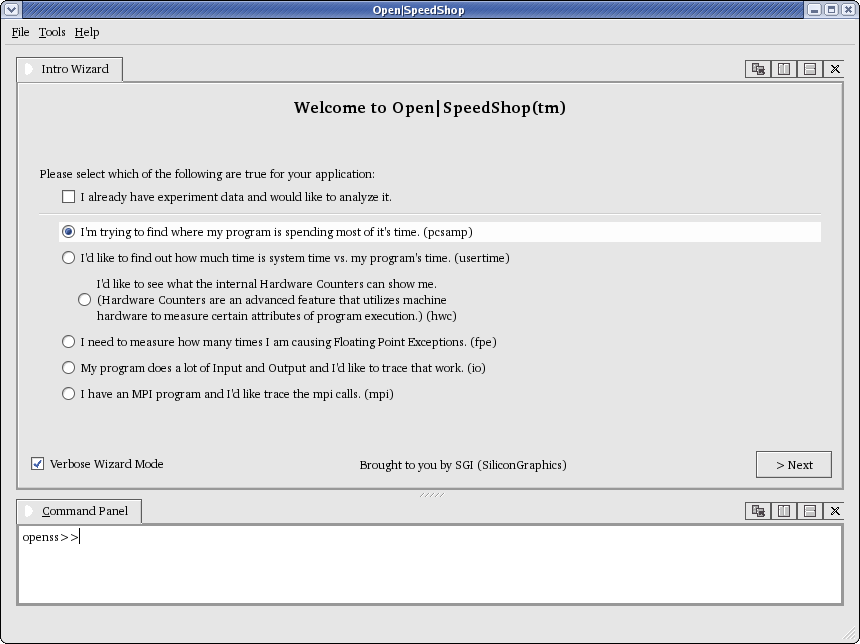
File Menu
The File menu contains the menu items shown below:
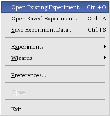
Open Existing Experiment
This menu item allows the user to open an experiment that was started or was being run via the interactive command line. By opening the experiment, the user focuses the graphical user interface to that experiment and gains access to the performance data gathered so far and control over the experiment. In the example dialog below, the user is about to focus on experiment 2 which is a usertime experiment. By selecting the experiment and clicking the OK button experiment 2 becomes the focused (current) experiment. Actions taken in the graphical user interface will now affect this experiment.
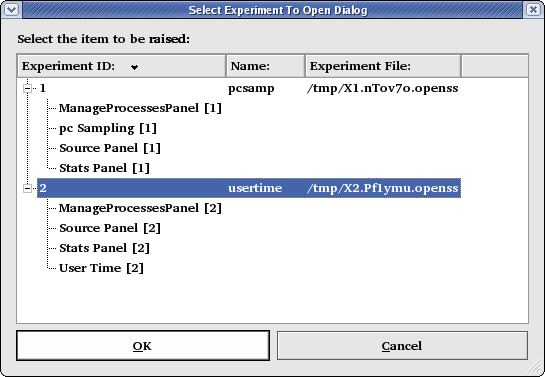
Open Saved Experiment
This menu item allows the user to re-open a saved experiment that was saved via the Save Experiment Data menu item. Performance data contained in the experiment may be reexamined and redisplayed once the experiment is opened again. In this example the user has chosen to open a saved Open|SpeedShop experiment file named sweep3d-256.openss. ".openss" is the default name for experiment files created by Open|SpeedShop.
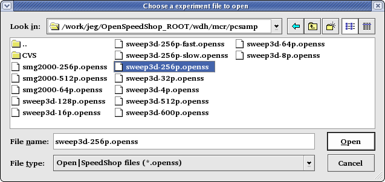
Save Experiment Data
The Save Experiment Data menu item writes the Open|SpeedShop performance experiment information and data to a filename specified by the user. The information saved will allow the user to examine and display performance information at a later time by opening this saved file with the Open Saved Experiment menu item. In this example, the user has chosen to save the usertime experiment whose experiment identification number is two (2).
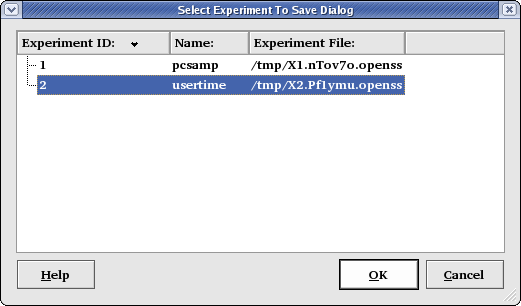
After clicking the OK button this dialog will bring up another dialog box asking the user to name the file to be saved.
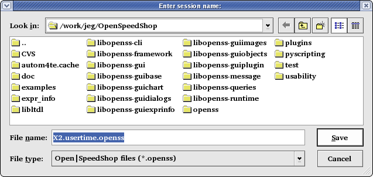
Clicking the "Save" button saves the Open|SpeedShop performance experiment data file. This file can be opened using the "Open Saved Experiment" menu item for viewing and analysis of the performance data saved within that file.
Experiments Menu
The Experiments Menu contains items corresponding to the experiments that are installed in the tool. In this example six experiments are available. The experiment panel can be accessed by clicking on the corresponding menu items.
At this time, the Version 1.00 Release, all the experiments, with the exception of the floating point exception, FPE, experiment are developed. Clicking on the menu item will bring up that particular experiment panel. For example, clicking on the PC Sampling menu item will bring up the program counter (PC) Sampling experiment panel as shown in the PC Sampling Experiment section.
Custom Experiment
The custom experiment allows users to define their own experiment. Details are TBD at this point.
FPE Tracing Experiment
A floating-point exception trace collects each floating-point exception with the exception type and the call stack at the time of the exception. Floating-point exception tracing experiments should incur a slowdown in execution of the program of no more than 15%. These measurements are exact, not statistical.
HW Counter Experiments
In the Open|SpeedShop hardware counter experiments, overflows of a particular hardware counter are recorded. Each hardware counter is configured to count from zero to a number designated as the overflow value. When the counter reaches the overflow value, the system resets it to zero and increments the number of overflows at the present program instruction address. Each experiment provides two possible overflow values; the values are prime numbers, so any profiles that seem the same for both overflow values should be statistically valid.
The experiments described in this section are available for systems that have hardware counters. Hardware counters allow you to count various types of events, such as cache misses and counts of issued and graduated instructions.
A hardware counter works as follows: for each event, the appropriate hardware counter is incremented on the processor clock cycle. For example, when a floating-point instruction is graduated in a cycle, the graduated floating-point instruction counter is incremented by 1.
These experiments are detailed by nature. They return information gathered at the hardware level. You probably want to run a higher level experiment first. Once you have narrowed the scope, you can use hardware counter experiments to pinpoint the area to be tuned.
The following sections describe hardware counter experiments available in Open|SpeedShop.
hwc Hardware Counter Experiment
The hwc hardware counter experiment shows where the overflows are being triggered in the program: at the function, source-line, or individual instruction level. When you create a report from the data collected during the experiment using the Open|SpeedShop GUI or CLI tools, the overflow counts are multiplied by the overflow value to compute the total number of events. These numbers are statistical, meaning they are not precise. The generated reports show exclusive hardware counts: that is, information about where the program counter was.Hardware counter overflow profiling experiments should incur a slowdown of execution of the program of no more than 5%.
The hwctime hardware counter experiments also show where the overflows are being triggered in the program. These experiments are similar to the hwc experiments, but record the callstack information rather than showing where the program counter was when the overflow occurred.
Input/Output (I/O) Experiment
The input/output (I/O) experiment captures several of the input and output system calls and records the time spent and the number of calls in each routine. The call stack is also recorded. This allows the user to interrogate the call stacks to find out where each call has been made in the application program
Input/Output Trace (IOT) Experiment
The input/output trace (IOT) experiment captures several of the input and output system calls and records the time spent, the number of calls in each routine, and also other data items that are related to the specific I/O system call. Call stacks are also recorded, allowing the user to interrogate the call stacks to find out where each call has been made in the application program
MPI Experiment
The MPI experiment captures the time spent in and the number of times each MPI function is called in the user's application program. The user also has the option of displaying this data in the trace format. When using the trace format each event is presented individually showing the start end end time for the MPI function call.
MPIT Experiment
This experiment captures each MPI function call event and records specific data corresponding to that particular call. The user is then able to display each of the MPI call event and it's data through the Open|SpeedShop GUI or command line interface (CLI)..
PC Sampling Experiment
pcsamp PC Sampling Experiment
The pcsamp experiment estimates the actual CPU time for each source code line, machine code line, and function in your program. The Command Line Interface performance results listing and the GUI performance results panel of this experiment show both inclusive and exclusive PC sampling time. This experiment is a lightweight, high-speed operation that makes use of the operating system.CPU time is calculated by multiplying the number of times an instruction or function appears in the PC by the interval specified for the experiment (for example: 1 or 10 milliseconds).
To collect the data, the operating system regularly stops the process, increments a counter corresponding to the current value of the PC, and resumes the process. The default sample interval is 10 milliseconds.
PC sampling runs should slow the execution time of the program down no more than 5 percent. The measurements are statistical in nature, meaning they exhibit variance inversely proportional to the running time.
User Time Experiment
usertime User Time Experiment
The usertime experiment is a useful experiment to start your performance analysis. The usertime experiment returns CPU time for each function while your program runs.
This experiment uses a statistical call stack profiling to measure inclusive and exclusive user time. It takes a sample every 30 milliseconds. Data is measured by periodically sampling the callstack. The program's callstack data is used to do the following:
Attribute exclusive user time to the function at the bottom of each callstack (that is, the function being executed at the time of the sample).
Attribute inclusive user time to all the functions above the one currently being executed (those involved in the chain of calls that led to the function at the bottom of the callstack executing).
The time spent in a procedure is determined by multiplying the number of times an instruction for that procedure appears in the stack by the sampling time interval between call stack samples. Call stacks are gathered when the program is running; hence, the time computed represents user time, not time spent when the program is waiting for a CPU. User time shows both the time the program itself is executing and the time the operating system is performing services for the program, such as I/O.
The usertime experiment should incur a program execution slowdown of no more than 15%. Data from a usertime experiment is statistical in nature and shows some variance from run to run.
Wizard Menu
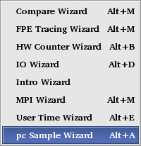
Compare Wizard
See the Wizard description for Typical Open|SpeedShop GUI Wizard Usage
for the general pattern of wizard usage.
Floating Point Exception (FPE) Tracing Experiment Wizard
The Floating Point Exception (FPE) Trace wizard uses the basic Open|SpeedShop wizard functionality while guiding the user through the selection of parameters and executables that will be included in the Floating Point Exception trace experiment. See the Wizard description for Typical Open|SpeedShop GUI Wizard Usage for the general pattern of wizard usage.
HW Counter Experiment Wizard
The Hardware Counter (HWC) wizard uses the basic Open|SpeedShop wizard functionality while guiding the user through the selection of parameters and executables that will be included in the hardware counter trace experiment. See the Wizard description for Typical Open|SpeedShop GUI Wizard Usage for the general pattern of wizard usage. The differences from the typical usages are explained in this section.
I/O Experiment Wizard
See the Wizard description for Typical Open|SpeedShop GUI Wizard Usage for the general pattern of wizard usage.
MPI Experiment Wizard
See the Wizard description for Typical Open|SpeedShop GUI Wizard Usage for the general pattern of wizard usage.
PC Sampling Experiment Wizard
See the Wizard description for Typical Open|SpeedShop GUI Wizard Usage for the general pattern of wizard usage. The typical use example there is of the PC Sampling Experiment wizard.
User Time Experiment Wizard
See the Wizard description for Typical Open|SpeedShop GUI Wizard Usage for the general pattern of wizard usage. The following GUI views show how to select the usertime experiment through the Wizard facility and what GUI window views to expect along the way. The advantage of the Usertime experiment over PC Sampling is that the views of the Usertime performance data show calling tree information.
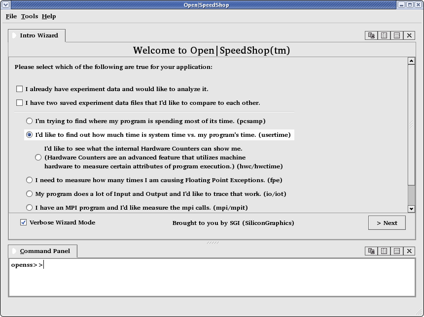
The next GUI view after selecting the usertime option above is a summary of what the usertime experiment does and the performance data to be expected.
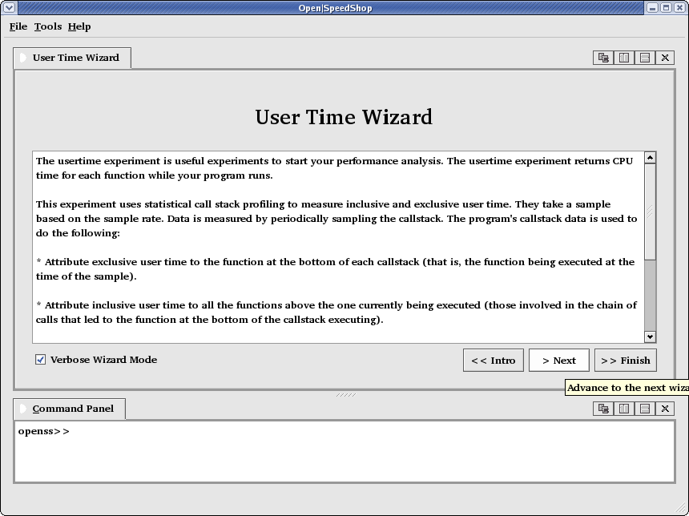
After clicking "Next" button to continue, the User Time experiment parameter is displayed with the option of changing it.
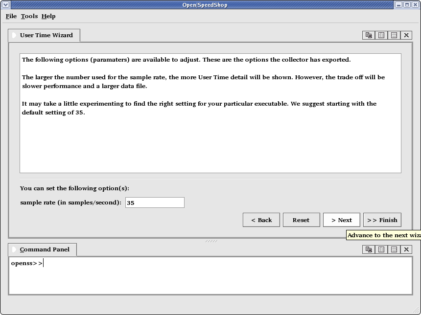
This GUI view allows the user to select the executables to be associated with this experiment. They can be loaded from disk or can be attached to.
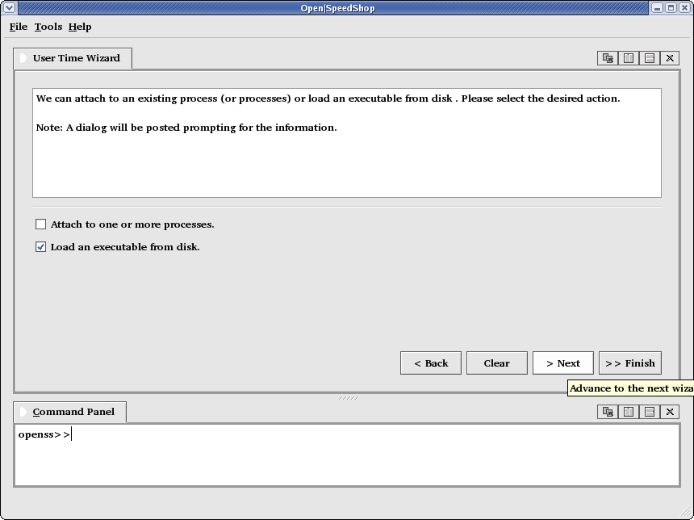
This window will appear when you choose the load executable from disk. By selecting the executable "fred" and clicking the "OK" button.
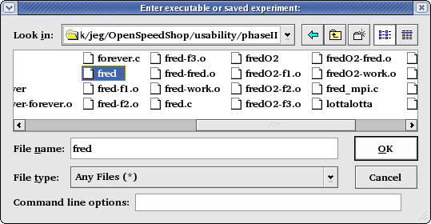
The UserTime Wizary summary window appears after the selection of the executable above. To change any of the selections choose the "Back" button, otherwise to actually run the performance experiment, choose the "Finish" button. The actual UserTime Experiment window will appear after the executable is loaded.
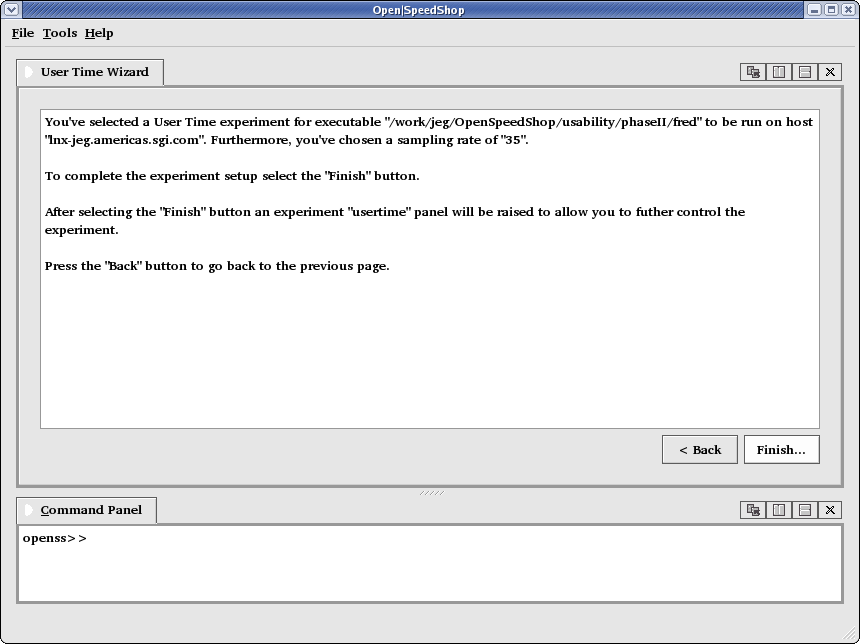
The UserTime experiment window allows the user to start the experiment and the application by clicking on the "Run" button. After the experiment is running, it may be paused temporarely by clicking on the "Pause" button. The "Run" button will restart the experiment.
When the experiment is completed, Open|SpeedShop will automatically show the results of the experiment by displaying a statistics panel as shown below.
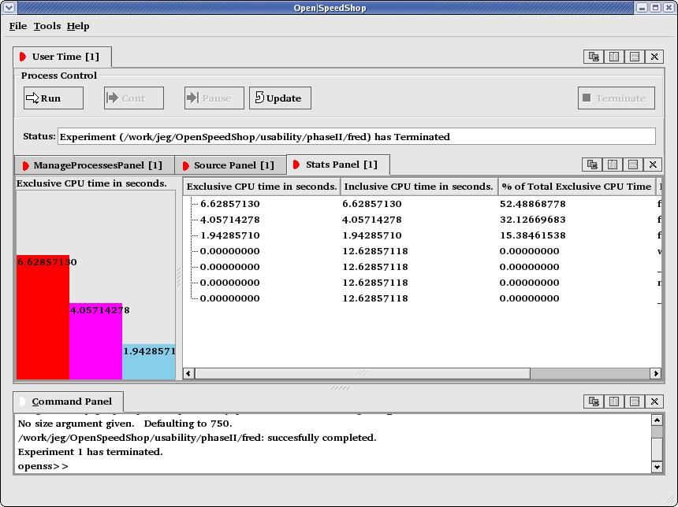
Preferences Menu Item
Selecting the Preferences menu item will cause the Open|SpeedShop Preferences Dialog window to appear. Selections for various configuration items can be done by selecting either General or a specific panel and then changing the particular preference item and clicking either the Apply button or the Ok button. The Apply button will apply the changes without exiting the preference processing window. Pressing the Ok button will apply the changes and exit the preference processing window.
Currently there are three areas of preference processing:
General:
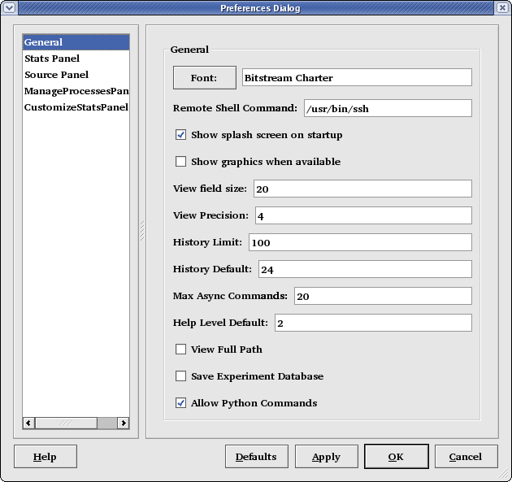
The General preferences are, as the general title implies, for setting items that apply to the overall Open|SpeedShop tool. Items such as font characteristics, graphics, splash screen, and remote shell command processing are now supported.
Statistics Related
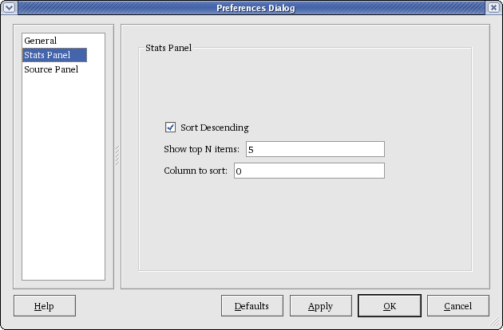
The statistics related preferences apply to the performance experiment results presentation. How to sort the results, what column to sort from, and how many result items do you want displayed are the current options supported.
Source Related
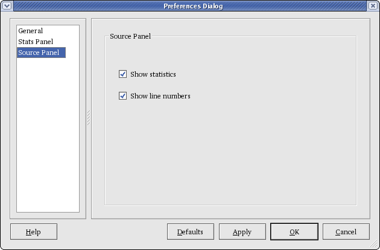
The source panel preferences are show line numbers and statistics. Statistics when set will present the performance results integrated with the source. See the source panel with statistics image at this link.
The source panel preferences also allow the user to map the original build path to the new location of the source, if the source and program have been moved. In the example below, the source for the program being analyzed was originally located in /data/clink/a45/stipek but was relocated to /work/jeg. By inputing this information to the preference panel (see below) the user will be able to view the source for the program at the new location (/work/jeg).
Manage Process Panel Related
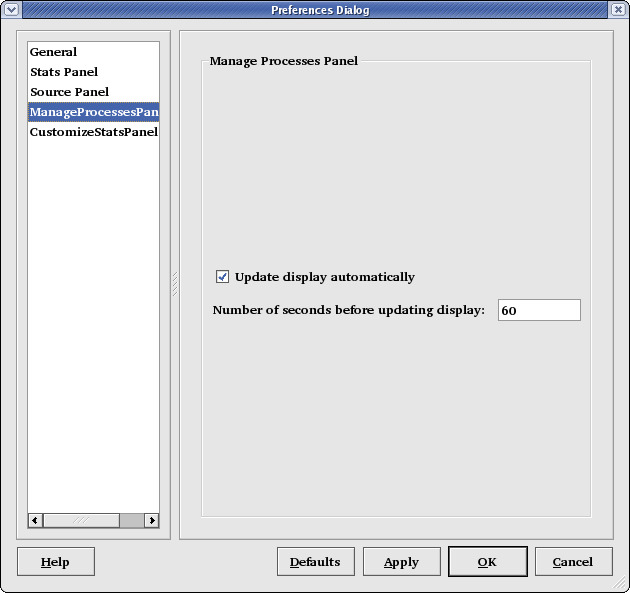
Close Menu Item
The Close menu item will cause the window to close but the Open|SpeedShop will continue......
Exit Menu Item
The Exit menu item will cause the Open|SpeedShop tool to completely stop execution and close all windows.
Tools Menu
The Tools Menu contains items for the panels that have been created. In this example three panels can be accessed by clicking on the corresponding menu items.


Command Panel
The command panel is the panel that supports input of the same set of interactive command line interface (CLI) commands. These are the commands that that may be entered when the Open|SpeedShop tool is invoked via "openss -gui". See the CLI command section for more information.
Source Panel
This menu item brings up the source panel window. There are a number of options available in the source panel that can be viewed by holding right mouse button:
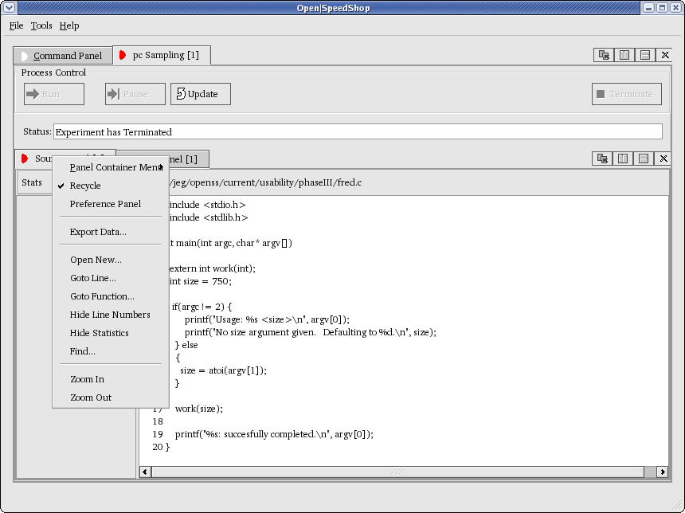
Stats Panel
Although the Stats Panel isn't part of the tool menu it is a panel that is available from the experiment tab panel and is a significant panel. It is home to many of the important options used in viewing the performance experiment results. Options currently available (viewed by right mouse down click in Stats Panel tab) include:
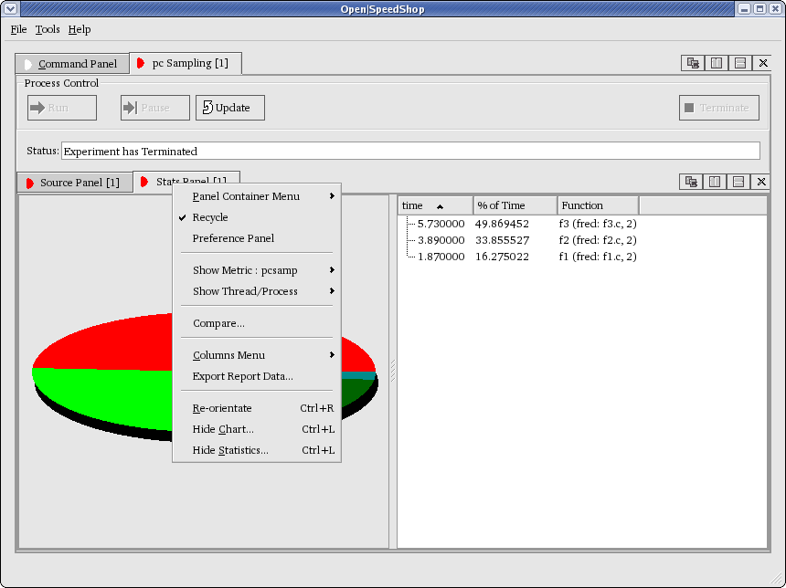
- Choosing experiment result metrics
- Choosing process, thread, or rank to view
- Comparing results
- Exporting/Saving result data
Typical Open|SpeedShop GUI Wizard Usage
Having launched the GUI via either the openss -gui or by default with the openss default command (no -cli, -batch, or -gui options), the initial window will look like this:
Introductory Wizard Display
Given this window the user can answer the wizard questions and proceed by clicking on the Next button on the lower right hand side of the Open|SpeedShop GUI window. In this example the user has chosen the default option which is to find out where the time is spent in the user's yet to be defined application. When the user clicks on the Next button this is the window that appears.
PC Sampling Wizard - Initial Display
The above panel/window is the introduction panel to the PC (Program Counter) Sampling Experiment Wizard. This panel explains what the Open|SpeedShop experiment, named PC sampling does. The program counter sampling experiment takes periodic samples of the machines program counter and stores them. Later in analysis the Open|SpeedShop tool associates the program counter addresses with the user's application and reports which functions, and/or source lines were executed during the applications execution. The user can now click on Next to proceed with the wizard process, go back, or quit the wizard by clicking on the Finish button. Here is the next window in the wizard process assuming the user clicked on the Next button.
PC Sampling Wizard - Change Sampling Rate Display
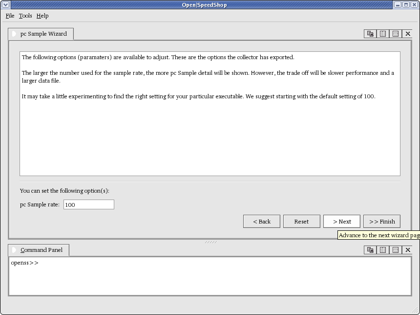
The above panel/window is the parameter selection panel for the PC (Program Counter) Experiment Wizard. This panel allows the user to set the sampling rate at which the PC sampling experiment will sample the program counter and save that address as the experiment measurement data. The Program Counter experiment takes the periodic samples of the machines program counter and stores them. Later in analysis the Open|SpeedShop tool associates the program counter addresses with the user's application and reports which functions, and/or source lines were executed during the applications execution. The user can now click on Next to proceed with the wizard process, go back, or quit the wizard by clicking on the Finish button. The user may also click on the Reset button, which will reset the parameter to the default value. Here is the next window in the wizard process assuming the user clicked on the Next button.
PC Sampling Wizard - Load Executable or Attach To Running Process Display

The panel/window above allows the user to select the executables or attach to a set of running processes. By selecting the "Load an Executable from Disk" item the user will cause a selection window to appear. Using the selection window the user can click on executables to be the application that the PC sampling experiment will gather data for.
PC Sampling Wizard - Enter Executable Dialog Display
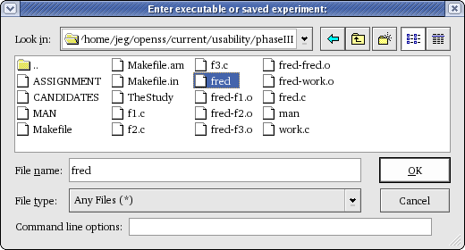
The panel above shows the executable selection window which allows the user to select the executable they would like to load and subsequently have performance analysis done on.
PC Sampling Wizard - Attach To Running Process Dialog Display
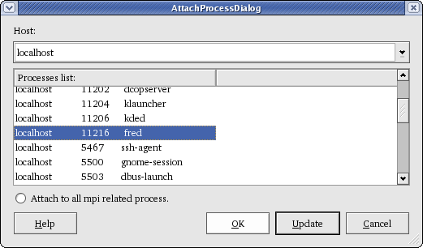
An alternative to the loading the executable is to attach to a running process. For example in this case, had the executable, fred, been already running, the above dialog display allows the user to select the running process for fred, another process, or multiple processes. See the attaching to an already running MPI job section which discusses attaching to an entire MPI job using this dialog display.
PC Sampling Wizard - Experiment Summary Display
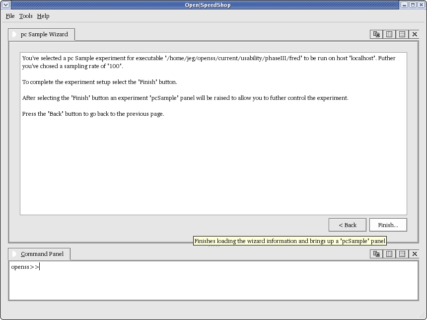
The panel/window above summarizes the results of the user's choices and tells the user to complete the process of creating the PC sampling experiment the user should click on the Finish button. Once the user clicks on the Finish button the PC sampling experiment window will appear.
PC Sampling Experiment Display
The panel/window above is the PC Sampling experiment window. The experiment is ready to run. Note that in the Status output output area the executable mutatee is loaded.
The process control area provides icons that may be clicked on to control the execution of the experiment. The icon to action translation is as follows:
- => Run the experiment
- |=> Continue the experiment
- =>| Pause the experiment
- |=> Run to Next statement
- \> Step into the next statement
- ! Stop the experiment
The source panel contains the source associated with the loaded application/executable. To run the experiment, click on the right arrow icon, which corresponds to the Run button. Doing this will engage Open|SpeedShop to start the application and to gather the PC Sampling performance data at the sampling rate chosen in the previous step(s).
PC Sampling Experiment - Running Experiment Display

PC Sampling Experiment - Paused experiment use Continue button to continue
The window below is here to illustrate that once the experiment has been paused (by clicking the Pause button), use the Cont (continue) button to continue the experiment. The Run button may be used to restart the experiment from the beginning.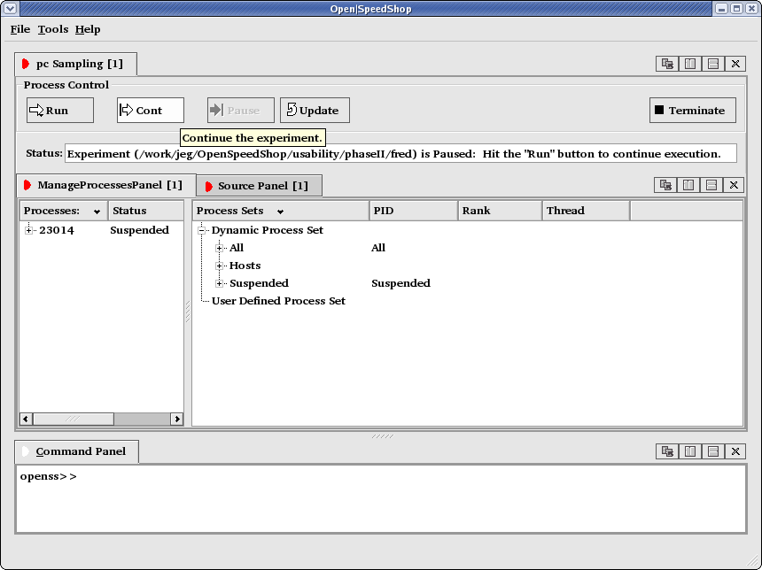
The image below shows the results after the experiment is completed. Because the "Show graphics" preference was set, a pie chart is displayed. To view the source and the results side by side. Click on one of the split panel icons on the right hand side of the PC Sampling panel.
PC Sampling Experiment - Statistics Display
The result of split horizontal panel action is shown in the next figure.
PC Sampling Experiment - Split Panel Display
After splitting the panels appear side by side. Clicking on the "f3" function results line will focus the source panel to the corresponding function "f3" source file and line number, if the application was compiled to include source debugging information such as dwarf. Some compilers do not include source debugging information when invoked at high optimization levels. In that case you may only have the function name but no source line information, so the click mentioned above will not be able to focus to the source for the function selected.
PC Sampling Experiment - Source and Statistics Relationship Display
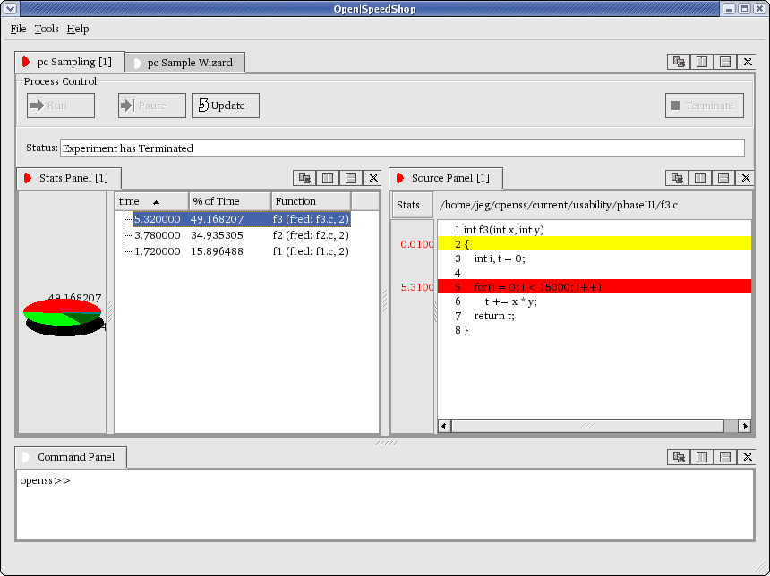
Clicking on the arrows to the right of the Time or Function header under the PC Stats Panel tab will sort the time or function list in ascending or descending order.
Typical Open|SpeedShop GUI non-Wizard Usage
To invoke the PC Sampling Experiment select the Experiments Menu and choose the PC Sampling Experiment menu item. This will cause the PC Sampling Experiment Window to be created and displayed, as in the image below.
Note: using this Open|SpeedShop command, "openss -f usability/phaseIII/fred pcsamp" will get the same result as the following steps which are needed when one invokes Open|SpeedShop with the "openss" (no arguments) command. Invoking the former command ("openss -f usability/phaseIII/fred pcsamp") will create the PC Sampling experiment and load the executable, fred, resulting in an openss GUI as shown in this link: Ready to run experiment.
The PC Sampling Experiment Window appears after choosing the PC Sampling menu item from the Experiment Menu.
Note the Load a new program message or status in the Process Control Status line. This indicates that no processes are attached and no executables have been loaded at this point. To load or attach to running process, right mouse button down in the PC Sampling Panel Tab to get a menu item list as seen in the next image. Select the Manage Processes Panel menu item.
Once the Load New Program menu item is selected the user will see the Enter executable or saved experiment window.
When the executable is selected the PC Sampling Experiment window shows that the program has been loaded.
At this point the typical non-Wizard usage matches that of the Wizard usage. Follow this link for the remainder of the typical usage explanation: Ready to run experiment.
Comparing Performance
Data using the Open|SpeedShop GUI
This section explains the typical usage of the Open|SpeedShop GUI to
compare performance data results. These results may have just
been gathered or could have been restored from a previously generated
Open|SpeedShop database file. The Open|SpeedShop graphical
user interface is very flexible and allows users to define there own
comparison views by defining what will be shown in each column of the
comparison display. Finding Processes, Threads, or Ranks that have out of range values using the Open|SpeedShop GUI
With the Open|SpeedShop 1.00 verssion there is a feature which automatically groups processes, threads, or ranks into sets which have similar values. This techinique which is called, cluster analysis, is used to find processes, threads, or ranks which are outside the majority of its siblings and therefore, also the performance bottleneck process, thread, or rank. To access this feature you must have run an Open|SpeedShop experiment with multiple processes, threads, or ranks or opened an Open|SpeedShop experiment that was run on an applicaiton with multiple processes, threads, or ranks. In the "Stats" panel menu there is an option to invoke the cluster analysis feature. See below: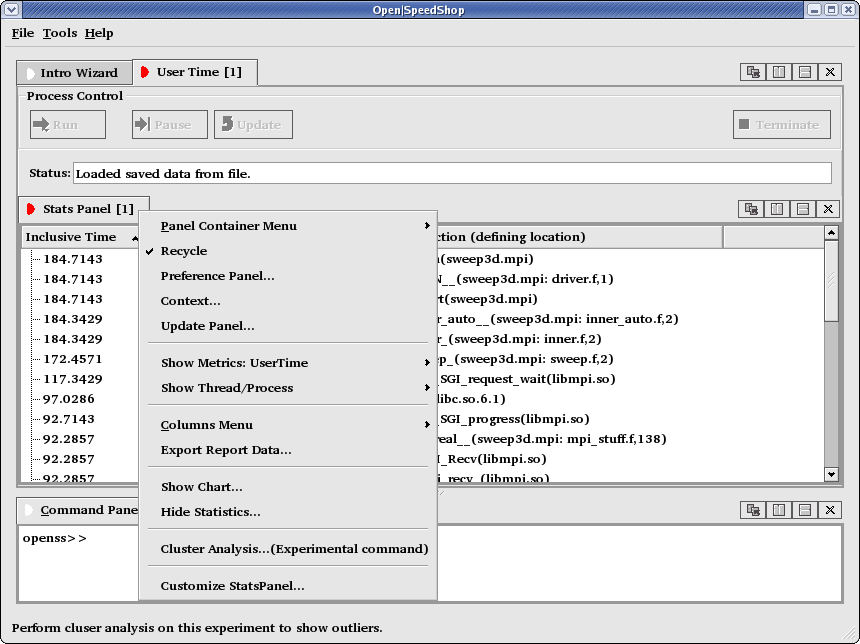
Note: The cluster analysis is experimental at this point and is only supported in the user time (usertime) experiment. When this command is invoked, Open|SpeedShop analyzes the all the performance data for the individual processes, threads, or ranks that were included in the Open|SpeedShop experiment and separates them into groups with similar performance numbers. Here is a simple example in which a MPI version of sweep3d was run on four processors over two hosts.
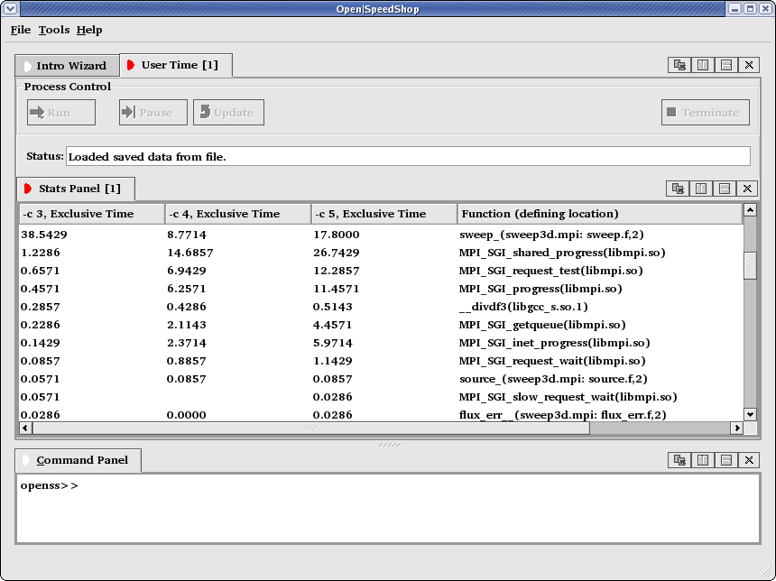
The current implementation of this feature does not have the context sensitive help enabled for showing what processes, threads, or ranks are included in each column of the output view. For now, one can view this information by using the "Context" menu item (see above "Stats" panel menu". By selecting "Context", the processes, threads, or ranks corresponding to the column designators (-c <number>) are shown.
In this example, column 3 (-c 3) is an process that is outside the other processes by a wide margin for time spent in the function sweep_.
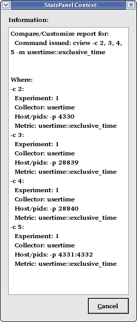
By double clicking on the sweep_ line in the cluster analysis view the user is focused on the sweep_ function. By browsing the source display (with the statistics preference enabled) one can locate the code that is taking a large amount of time (see below). The loop that is being focused on is taking 29.2571 seconds. It appears this is only being done when the rank is equal to one (contrived example to illustrate the use of this feature).
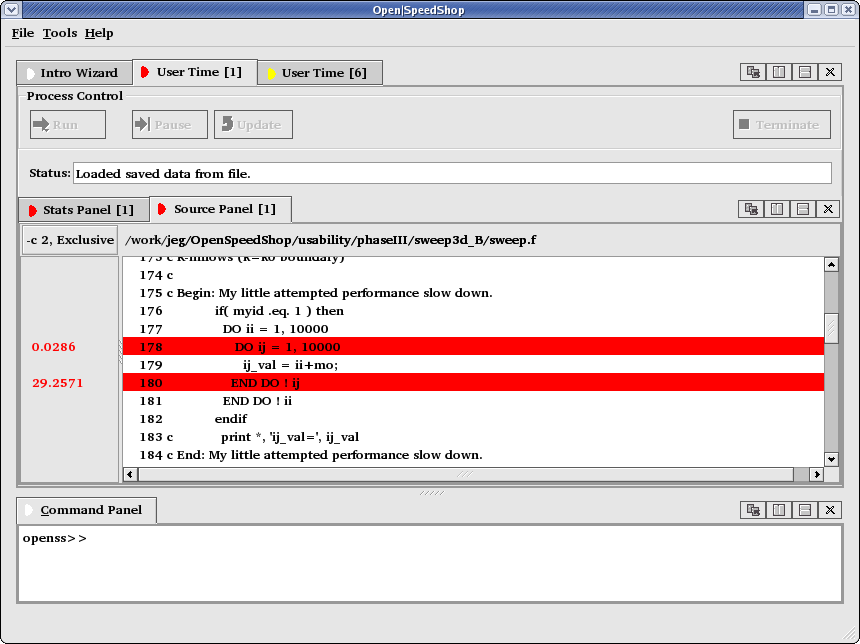
Open|SpeedShop GUI Usage on MPI Applications
General Concepts
Open|SpeedShop supports automatically attaching to all the ranks/processes in a MPI application provided the MPI implementation is using the MPIR defacto standard for finding all the ranked processes within a MPI application. This is discussed more in the sections below. Open|SpeedShop allows the user to use the rank number of the ranked processes as input to Open|SpeedShop for selecting and filtering just as a process or thread number would be used. Open|SpeedShop also displays the rank number for each ranked process in the GUI panel output and in the GUI command window text output views. Open|SpeedShop version 1.00 now provides for creating a MPI job from start up, meaning it can create the MPI job from within Open|SpeedShop. There are details in the paragraphs below explaining how to create the MPI job from within Open|SpeedShop.Notes/Caveats
- Open|SpeedShop can attach to individual MPI processes/ranks automatically, but in order to do that the MPI implementation installed must have the MPIR interface symbols exposed. This usually entails using the --enable-debugging configure option when building. The MPIR interface is the same interface that the TotalView® debugger uses.
- Check to see if Security-enhanced Linux (SELinux) is enabled on your system. This has caused the Open|SpeedShop Dyninst component to fail when inserting code into the application being profiled. An example of the message that may appear is:
- The error message “cannot restore segment prot after reloc: Permission denied” means Security Enhance Linux feature to prevent to write on the segment of text relocation (its default read only). The command “chcon –t texrel_shlib_t /usr/local/lib/libdpcl.so*” may be used to change it to have write permission too.
- The OPENSS_MPI_IMPLEMENTATION environment variable is used when
you configured openss to support more than one
MPI implementation. This means if you have multiple MPI collectors created (when you built Open|SpeedShop you configured for multiple MPI implementations). Say, for example, you have mpich2, lampi, and openmpi collectors and the application you are running under openss is a mpich2 MPI application. You would set OPENSS_MPI_IMPLEMENTATION to mpich2, like this:
- setenv OPENSS_MPI_IMPLEMENTATION mpich2
That tells openss which MPI implementation to process. This will be automated in the future.
If you run openss again on a lampi application, then change the environment
variable setting to this:
- setenv OPENSS_MPI_IMPLEMENTATION lampi
Multiple MPI version
Implementation Implications
Open|SpeedShop supports
multiple MPI with a single Open|SpeedShop
executable. However, the user must be aware that in certain
versions of MPI the data Open|SpeedShop
needs to automatically attach to a running MPI application resides in
the "mpirun" process on some MPI implementations and in any of the
ranked processes in other MPI implementations. A table is
provided below to aid in the selection process:| MPI IMPLEMENTATION |
WHAT TO ATTACH TO |
| SGI® MPT, OPENMPI, LAMPI SLURM |
mpirun process srun process on SLURM |
| MPICH download or any other MPI
implementations where mpirun is a script, not an executable. |
rank 0 process |
| MPICH2 - support for this is in
progress (as of December 20, 2006) |
mpirun process |
This information is needed when attaching to an already running MPI application which is described in the sections below.
Attaching to Already Running MPI Applications
Gui Wizard Information
Attaching to a running MPI application is very similar to attaching to a non-MPI running application or process. When stepping through the experiment Wizards one eventually comes to the window that allows the user to select their executable to load or processes, threads, or ranks to attach to. If one chooses, "Attach to running process" in that window (see the Wizard load/attach dialog for details) then the Attach Process Dialog display (see below) appears. This is where the user can choose the process(es) related to the MPI application they wish to attach to.The hostname can be changed by typing the new hostname into the "Host:" input area and then clicking the "Update" button. This will cause a query of the new host for the user's running processes.
In the following dialog display, selecting the "Attach to all MPI related processes" option causes Open|SpeedShop to attach to all the MPI processes that are related to the process or processes selected. In the example below, Open|SpeedShop would attach to processes 27112, 27113, and 27114.
For MPICH MPI jobs you may select any of the rank processes to attach to. Open|SpeedShop will attach to the entire job if you have selected the "Attach to all MPI related processes" option.
For SGI® MPT MPI job you must select the MPIRUN process to attach to. Just as in the MPICH case, Open|SpeedShop will attach to the entire job if you have selected the "Attach to all MPI related processes" option.
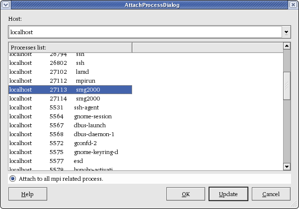
Gui Non-Wizard Information
The Non-Wizard attach dialog is the same dialog display, but the user arrives at the attach dialog display from a different GUI gesture path. After the user choose the File->Experiments->PC Sampling menu item, Open|SpeedShop creates the PC Sampling Experiment window below. The user can then right mouse button down on the PC Sampling Experiment tab and select the Manage Process menu item. From there the user can choose Attach Process (see display below).
Upon selecting the "Attach Process" menu item the user will see the Attach Process dialog display and then be able to select a MPI process and then either attach to the entire MPI job by selecting the "Attach to all MPI related processes" option or just that MPI process.
The hostname can be changed by typing the new hostname into the "Host:" input area and then clicking the "Update" button. This will cause a query of the new host for the user's running processes.
Loading and Starting MPI Applications
As of release version 1.00 of Open|SpeedShop starting MPI jobs from within Open|SpeedShop is supported. Previously one could only start the MPI job up and attach to the MPI processes/ranks as they were already running. If running with the interactive command line interface (CLI) see the section on Open|SpeedShop CLI Usage on MPI applicationsGui Wizard Information
Currently support consists of starting the MPI application via the openss command. An example of this command form is as follows:Gui Non-Wizard Information
Currently support consists of starting the MPI application via the openss command. An example of this command form is as follows:Using the Interactive CLI Tool
The interactive command line interface tool accepts a number of Open|SpeedShop command line interface commands. These commands allow the user to create performance measurement experiments, attach executables, run the experiment to gather performance metric data, and also to display the data to the screen via the text view commands or to launch the GUI to view the performance experiment data.
The interactive command syntax document contains the commands and syntax that the Interactive CLI tool accepts as input. A interactive command usage document shows information similar to the help that the interactive command tool gives when requests for help on a command are entered. A simple scenario to illustrate usage, both in command only form and command and explanation form. Click on this link to view the scenario.
CLI Launch Background Information:
The CLI is bundled into a dynamic library that is loaded on demand. It's the Open|SpeedShop main program that launches the CLI. By default the openss command will launch the GUI upon invocation of the Open|SpeedShop tool. However, the CLI can be started without starting the GUI ($ openss -cli).
Upon invoking Open|SpeedShop ($ openss -cli) the command line is parsed, and if the CLI is requested, the CLI library is loaded and launched. Open|SpeedShop then drops into an event loop for parsing command line events.
When the CLI or GUI is loaded, they look for CLI and/or GUI plugins in the default directory and in the OPENSS_TOOL_PLUGIN_DIR environment variable path. Each file in the directory is opened and an internal entry point is queried. If found, the plugin manager calls the entry point, initializes any exported menus, brings up the CLI and/or GUI, and then drops into the main event loop(s) waiting for user interaction.
Typical Open|SpeedShop CLI Usage
Having launched the CLI via the openss -cli the initial window will look like this:
machine.prompt>./openss -cli
At this point, user's may enter one of the commands described in Appendix A: Command Syntax. These commands are primarily related to creating, running, and monitoring performance experiments. There are also information commands which give machine information. An typical usage example of a PC Sampling Experiment follows:
openss>>
[prompt] : openss -cli
# The first user command is to create an experiment. In this example
# it is a PC Sampling experiment (pcsamp) and it will be run on the
# mutatee executable.
openss>>expcreate -f /home/openss/demo/Simple/mutatee pcsamp
# Below a "1" is returned to indicate the experiment number
openss>> 1
# The next user command is "expGo" which runs the experiment
openss>>expGo
openss>>
# The next three lines are output from the executable's execution
Usage: /home/openss/demo/Simple/mutatee <size>
No size argument given. Defaulting to 250.
/home/openss/demo/Simple/mutatee: successfully completed.
# The next user command tells Open|SpeedShop to print the results of the experiment
# NOTE - the 5 at the end of the stats parameter indicates you want to view the top 5 functions.
# If you had specified 33, as in stats33, you would see the top 33 functions in the performance report.
openss>>expView
# The next four lines are the output of the experiment due to the expView command
CPU Time (Seconds) Function
2.090000 f3
1.320000 f2
0.650000 f1
# Open|SpeedShop prompt for additional command input
openss>>
Open|SpeedShop CLI Usage on MPI applications
General Concepts
Open|SpeedShop supports automatically attaching to all the ranks/processes in a MPI application provided the MPI implementation is using the MPIR defacto standard for finding all the ranked processes within a MPI application. This is discussed more in the sections below. Open|SpeedShop allows the user to use the rank number of the ranked processes as input to Open|SpeedShop for selecting and filtering just as a process or thread number would be used. Open|SpeedShop also displays the rank number for each ranked process in the interactive command line window text output views.
Notes/Caveats
- Open|SpeedShop can attach to individual MPI processes/ranks automatically, but in order to do that the MPI implementation installed must have the MPIR interface symbols exposed. This usually entails using the --enable-debugging configure option when building. The MPIR interface is the same interface that the TotalView® debugger uses.
- Check to see if Security-enhanced Linux (SELinux) is enabled on your system. This has caused the Open|SpeedShop Dyninst component to fail when inserting code into the application being profiled. An example of the message that may appear is:
- The error message “cannot restore segment prot after reloc: Permission denied” means Security Enhance Linux feature to prevent to write on the segment of text relocation (its default read only). The command “chcon –t texrel_shlib_t /usr/local/lib/libdpcl.so*” may be used to change it to have write permission too.
- The OPENSS_MPI_IMPLEMENTATION environment variable is used when you configured openss to support more than one
MPI implementation. This means if you have multiple MPI collectors created (when you built Open|SpeedShop you configured for multiple MPI implementations). Say, for example, you have mpich2, lampi, and openmpi collectors and the application you are running under openss is a mpich2 MPI application. You would set OPENSS_MPI_IMPLEMENTATION to mpich2, like this:
- setenv OPENSS_MPI_IMPLEMENTATION mpich2
That tells openss which MPI implementation to process. This will be automated in the future.
If you run openss again on a lampi application, then change the environment
variable setting to this:
- setenv OPENSS_MPI_IMPLEMENTATION lampi
Multiple MPI version Implementation Implications with the CLI
Open|SpeedShop supports multiple MPI with a single Open|SpeedShop executable. However, the user must be aware that in certain versions of MPI the data Open|SpeedShop needs to automatically attach to a running MPI application resides in the "mpirun" process on some MPI implementations and in any of the ranked processes in other MPI implementations. A table is provided below to aid in the selection process:
MPI IMPLEMENTATION
WHAT TO ATTACH TO
SGI MPT, OPENMPI, LAMPI
SLURMmpirun process
srun process on SLURM
MPICH download or any other MPI implementations where mpirun is a script, not an executable.
rank 0 process
MPICH2 support is in progress (as of December 20, 2006)
mpirun process
This information is needed when attaching to an already running MPI application which is described in the sections below.
Attaching to Already Running MPI Applications with the CLI
When running Open|SpeedShop on an MPI application and attaching to all the ranks within the MPI job, one must use the information provided in the Multiple MPI version Implementation Implication section above. First a list of the running processes is needed. This can be obtained either in another xterm window or from the openss command line interface itself. The Open|SpeedShop interactive command line interface (CLI) allows for the execution of simple Linux commands from within the CLI interface.
Example 1: Attach to mpirun
The first example is on a system using a MPI implementation that requires attaching to the mpirun process to automatically attatch to the entire list of ranks in the MPI application.
[machine prompt]:openss -cli
openss>>
openss>>!ps -efl | grep userid | grep mpirun
0 S userid 19207 6068 0 71 0 - 803 do_sel 08:12 pts/0 00:00:00 mpirun -np 16 sweep3d.mpi
0 S userid 19233 19232 0 77 0 - 1235 wait4 08:13 ttyp0 00:00:00 sh -c ps -efl | grep userid | grep mpirun ?
0 S userid 19236 19233 0 77 0 - 1094 pipe_w 08:13 ttyp0 00:00:00 grep mpirun
openss>>expcreate pcsamp -v mpi -p 19207
NOTE: The "-v mpi" option to expcreate tells the interactive command line interface to attach to the entire MPI job, not just the process 19207. Open|SpeedShop, if the "-v mpi" option is present, will
Example 2: Attach to MPI rank 0 process
The second example is on a system using a MPI implementation that requires attaching to a MPI rank process to automatically attatch to the entire list of ranks in the MPI application.
Here is a possible set of instructions on how to attach to the MPI rank 0 process to attach to the entire MPI job (all ranked processes).
In window 1: Start Open|SpeedShop via the "openss -cli" command
In window 2: cd to the application directory, smg2000/test in this example
In window 3 or in the openss CLI window: Use ps -ef | grep smg2000 to find the ranked process
window #1, start openss -cli, select hwc
[machine prompt]: ./openss -cli
Welcome to Open|SpeedShop, version 0.875.
Type 'help' for more information.
openss>>expcreate hwctime
openss>>The new focused experiment identifier is: -x 1
In window #2: Start the MPI application, smg2000, in this example
[machine prompt]: /opt/mpich/ch-p4/bin/mpirun -np 4 smg2000 -n 75 75 75
In window #3: Issue the command to find the ranked processes: ps -ef | grep smg2000.
Find the first instance of smg2000 with CPU time > 0 and that does not have any rank info in the process command line info.
e.g. pid 7824 is such a process.
[machine prompt]: ps -ef | grep smg2000
userid 7695 30159 0 13:53 pts/0 00:00:00 /bin/sh /opt/mpich/ch-p4/bin/mpirun -np 4 smg2000 -n 75 75 75
userid 7824 7695 0 13:53 pts/0 00:00:03 /scratch/userid/smg2000/test/smg2000 -n 75 75 75 -p4pg /scratch/userid/smg2000/test/PI7695 -p4wd /scratch/userid/smg2000/test
userid 7825 7824 0 13:53 pts/0 00:00:00 /scratch/userid/smg2000/test/smg2000 -n 75 75 75 -p4pg /scratch/userid/smg2000/test/PI7695 -p4wd /scratch/userid/smg2000/test
userid 7826 7824 0 13:53 pts/0 00:00:00 /usr/bin/ssh localhost -l userid -n /scratch/userid/smg2000/test/smg2000 wsopenss2 34618 \-p4amslave \-p4yourname localhost \-p4rmrank 1
userid 7831 7830 0 13:53 ? 00:00:00 csh -c /scratch/userid/smg2000/test/smg2000 wsopenss2 34618 \-p4amslave \-p4yourname localhost \-p4rmrank 1
userid 7841 7831 0 13:53 ? 00:00:04 /scratch/userid/smg2000/test/smg2000 wsopenss2 34618 4amslave -p4yourname localhost -p4rmrank 1
userid 7842 7824 0 13:53 pts/0 00:00:00 /usr/bin/ssh localhost -l userid -n /scratch/userid/smg2000/test/smg2000 wsopenss2 34618 \-p4amslave \-p4yourname localhost \-p4rmrank 2
userid 7843 7841 0 13:53 ? 00:00:00 /scratch/userid/smg2000/test/smg2000 wsopenss2 34618 4amslave -p4yourname localhost -p4rmrank 1
userid 7695 30159 0 13:53 pts/0 00:00:00 /bin/sh /opt/mpich/ch-p4/bin/mpirun -np 4 smg2000 -n 75 75 75
In window #1 (openss) attach to the ranked process.
openss>> expattach -v mpi -p 7824
openss>>expgo
openss>>Start asynchronous execution of experiment: -x 1
openss>>expview
PAPI_TOT_CYC % of Total Function Name
39162720000 13.2517 hypre_SMGResidual(smg2000)
24302400000 8.4087 hypre_CyclicReduction(smg2000)
2350560000 0.6919 hypre_SemiInterp(smg2000)
1474080000 0.2661 hypre_SemiRestrict(smg2000)
756960000 0.3725 MPIR_UnPack_Hvector(smg2000)
717120000 0.1064 memcpy(libc.so.6)
438240000 0.1064 hypre_StructAxpy(smg2000)
398400000 0.2661 hypre_SMGAxpy(smg2000)
398400000 0.0532 hypre_InitializeCommunication(smg2000)
...
...
...
openss>>expstatus
openss>>
Experiment definition
{ # ExpId is 1, Status is Terminated, Temporary database is /tmp/ssdb1pJkmpG.openss
Currently Specified Components:
-h wsopenss2 -p 7824 hwc
-h localhost -p 7841 hwc
-h localhost -p 7861 hwc
-h localhost -p 7878 hwc
Metrics:
hwc::overflows
Parameter Values:
hwc::event = PAPI_TOT_CYC
hwc::sampling_rate = 39840000
Available Views:
hwc
}
openss>>expview hwc -p 7824
PAPI_TOT_CYC % of Total Function Name
9920160000 53.4335 hypre_SMGResidual(smg2000)
6294720000 33.9056 hypre_CyclicReduction(smg2000)
517920000 2.7897 hypre_SemiInterp(smg2000)
278880000 1.5021 MPIR_UnPack_Hvector(smg2000)
199200000 1.0730 hypre_SemiRestrict(smg2000)
199200000 1.0730 hypre_SMGAxpy(smg2000)
119520000 0.6438 MPIR_Unpack2(smg2000)
119520000 0.6438 MPID_CH_Eagerb_isend_short(smg2000)
119520000 0.6438 hypre_SMGSetStructVectorConstantValues(smg2000)
79680000 0.4292 memcpy(libc.so.6)
79680000 0.4292 hypre_StructAxpy(smg2000)
39840000 0.2146 _int_malloc(libc.so.6) \
...
...
...
openss>>
Loading and Starting MPI Applications with the CLI
[machine prompt]:openss -cli
openss>>expcreate pcsamp -f "mpirun -np 256 sweep3d.mpi"
The expcreate command above will automatically attach to all 256 processes/ranks of the MPI job and return the prompt when the experiment is ready to run. The quotes around the mpirun command allow Open|SpeedShop to process many variations of MPI without having to parse the commands of the various MPI implementations. The quotes are required.
NOTE: The "-v mpi" option that was needed in attaching to running to the already running MPI processes or ranks to tell the expcreate to attach to the entire MPI job, not just the single MPI process that is specified by the -p option IS NOT required.
Using the Batch Command Tool
The batch command
tool is essentially invoking the Open|SpeedShop command "openss" with
the "-batch" option and either piping a list of command line interface
commands into the invocation (see piping example below) or simply
specifying the experiment and executable in the "openss -batch" command
(see example below).
In both cases, Open|SpeedShop processes the list of
Open|SpeedShop command line
interface commands synchronously (in sequential order) and without user
intervention.
One step batch example
For users desiring
to run an experiment on an executable and view the results, the simple
batch command syntax might be the easiest command to use. The
syntax for this usage of Open|SpeedShop is as follows:
where for most invocations <target_list> reduces to "-f executable_name" and
<expType_list> reduces to one of the supported experiment names, such as, pcsamp, usertime, io, ... etc.
For illustration purposes, here is an example of a usertime experiment run on an executable named fred:
Command example:
openss -batch -f usability/phaseII/fred usertime
Command output:
The new
focused experiment identifier is: -x 1
Start asynchronous execution of experiment: -x 1
Usage: /work/jeg/OpenSpeedShop/usability/phaseII/fred <size>
<segment_count>
No size argument given. Defaulting to 750.
/work/jeg/OpenSpeedShop/usability/phaseII/fred: succesfully completed.
Exclusive CPU time Inclusive CPU time %
of Total Exclusive
Function (defining location)
in
seconds. in
seconds.
CPU Time
5.45714275
5.45714275
51.62162162 f3
(fred: f3.c,23)
3.31428565
3.31428565
31.35135135 f2
(fred: f2.c,2)
1.79999996
1.79999996
17.02702703 f1
(fred: f1.c,2)
0.00000000
10.57142836
0.00000000
__libc_start_main (libc.so.6)
0.00000000
10.57142836
0.00000000
_start (fred)
0.00000000
10.57142836
0.00000000 work
(fred: work.c,2)
0.00000000
10.57142836
0.00000000 main
(fred: fred.c,5)
Flexible Pipe commands batch example
Open|SpeedShop CLI command file contents (batch.input file)
expcreate -f home/openss/demo/Simple/mutatee usertime
expgo
expview -v statements -m time
exit
Command example:
openss
-batch <
batch.input
Command output:
The
new focused experiment identifier is: -x 1
Start asynchronous execution of experiment: -x 1
Exclusive CPU time Statement Location (Line Number)
in seconds.
46.99999906
mutatee.c(27)
27.08571374
mutatee.c(18)
15.94285682
mutatee.c(9)
13.37142830
mutatee.c(28)
12.22857118
mutatee.c(19)
3.62857136
mutatee.c(10)
0.02857143
mutatee.c(21)
0.02857143
mutatee.c(24)
0.00000000
mutatee.c(38)
0.00000000
mutatee.c(46)
Scripting
API
The scripting API in Open|SpeedShop is implemented using Python. The scripting API gives users the opportunity to import Open|SpeedShop as a Python module and execute Open|SpeedShop commands as function calls. Some highlights of the scripting API functionality are:
A simple test case illustrating the functionality is shown here:
- Open|SpeedShop Python API executes “same” Interactive/Batch Open|SpeedShop commands
- Users can intersperse “normal” Python code with Open|SpeedShop Python API
- Users can run Open|SpeedShop experiments via the Open|SpeedShop Python API
import oss
my_filename=oss.FileList(("../../usability/phaseII/fred")
my_viewtype = openss.ViewTypeList()
my_viewtype += "pcsamp"
exp1=oss.expCreate(my_filename,viewtype)
oss.expGo()
oss.wait()
except openss.error:
print "expGo(exp1,my_modifer) failed"
oss.dumpView()
Excl. CPU time % of CPU Time Function (def. location) \
4.6700 47.7994 f3 (fred: f3.c,23)
3.5100 35.9263 f2 (fred: f2.c,2)
1.5900 16.2743 f1 (fred: f1.c,2)
The example creates a program counter sampling experiment (pcsamp) for the executable that is located in the relative directory path "../../usability/phaseII/". The oss.expGo python statement runs the experiment and the oss.dumpView prints the results.
If this functionality is of interest to you, please follow this link to the detailed documentation associated with the Python scripting API definition.
Plugin API (Extensibility) Description
A plugin is a mechanism in which to extend the capability of Open|SpeedShop by adding additional experiment collectors, Graphical User Interface panels or Interactive Command Line Interface data views. These are multiple plugin types used in Open|SpeedShop:- Collector Plugins
- Graphical User Interface Plugins
- Interactive Command Line Interface View Plugins